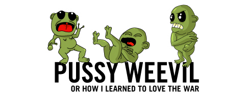

|  | ||
|
Overview Pussy Weevil is an individual software character/persona, a screen-based 2D animated character, that also responds to the viewer's distance or proximity. Pussy Weevil's behaviors respond to certain parameters that define its characteristics; Pussy Weevil reacts to the viewer's position, which influences how the character acts and behaves. The piece involves choreography in space and deals with subject / object relationships vis-a-vis the viewer. Pussy Weevil variously ignores you, derides you, or runs away in fright. Pussy Weevil is otherworldly, like a Darwinian specimen or a freak on display. At the same time, its prelinguistic behaviors are horribly familiar: Pussy Weevil is pure Id. It's a proto-Tex-Avery character, whose form is malleable and virtually indestructible. It mutates, splits, spits, and glitches; as an immediate object of a viewer's interventions, it never finds a middle ground between dark heckling and pitiful fear. Pussy Weevil lives in the zone of biologically hazardous materials - or maybe it's only a danger to itself. It might be just a sorrowful, botched genetic experiment that has about as much sense as a dull, reactive house pet. In Pussy Weevil, the artists draw from character development and narrative inquiry in several contexts: the animated cartoon, the physical object, and interactive space. Pussy Weevil questions how digital characters can be affected by interactions in analog spaces and examines the relationship between the real and computer made worlds. Exhibition History Bitforms Gallery, NYC May-June 2003 Art Interactive, Cambridge, MA July-October 2003 American Museum of the Moving Image 2003-2004 Artist Biographies Marina Zurkow Marina Zurkow is a multidisciplinary artist engaged with character, icon, and narrative in several forms: animated works, interactive installations, graphic design, and physical stuff. Her projects include the award-winning animated episodic Braingirl that chronicles a mutant-cute girl who wears her insides on the outside; and PDPal, a mapping application/installation for screen, web and PDA that allows a user to write her own city, in collaboration with architect Scott Paterson and technologist Julian Bleecker. Her pictographic icons have been incorporated in diverse projects, from animated films to hotel design, lightboxes and clothing. Zurkow's work has been exhibited at the Sundance Film Festival, the Rotterdam Film Festival, Ars Electronica, the Walker Art Center, the Brooklyn Museum, SFMOMA, Eyebeam Atelier, Totem Design and bitforms gallery, and broadcast on MTV and PBS. Zurkow is a 2003 Rockefeller New Media Fellow, and received grants in 2001-2002 from Creative Capital Foundation, the Jerome Foundation and the Walker Art Center. She is an adjunct professor at Parsons School of Design in the MFA Design & Technology Department. Currently Zurkow is working on a long-form, multilinear animated narrative called Little NO, which will be previewed at the Kitchen in May 2004 in new York, as well as a series of interactive character installations with Julian Bleecker. After attending Barnard College, Zurkow received a BFA with honors in Fine Art from the School of Visual Arts, where she also received the Silas Rhodes Award for Outstanding Achievement. She was born in New York City and resides in Brooklyn. Julian Bleecker Julian Bleecker has long been involved in technology design, both the development work involved in building mobile and networked systems, and in his work to produce provocative human-machine entanglements. His work emphasizes expanding conventional understandings of technology, networks, public space, and mobility in order to engage broad social dialogues about technology and cultural change. His work and writing has appeared in many venues including Wired, Afterimage, Whitney Museum of American Art's Artport, American Museum of the Moving Image, Bitforms Gallery, Walker Art Center, and more. His essay on SimCity 2000, "Urban Crisis: Past Present and Virtual" was recently translated into Italian for an edited volume commemorating the 15th Anniversary of that game. He is also a professional mobile and wireless technology consultant, and is on the faculty of the Design and Technology Department at Parsons School of Design and writes and lectures on technology and culture. He has a BS in Electrical Engineering from Cornell University, and an MS in Engineering (Computer-Human Interaction) from the University of Washington, Seattle. He is a Ph.D. candidate at the University of California, Santa Cruz's History of Consciousness Board of Studies. His dissertation is about the the ways in which technologies of visualization construct representations of reality and truth. Technology Specs Pussy Weevil is an installation art-technology piece consisting of a flat-screen monitor embedded in a wall or pedestal, ultrasonic proximity sensors, microcontroller, custom interface and control software, and a computer running Macromedia Flash animations and ActionScript. Demonstration The demonstration provided is full interactive and allows one to see the various Pussy Weevil modalities. The three proximity "zones" - close, near, far away - allow you to see how Pussy Weevil would react based on a visitor's distance from the installation. Click here for the demonstration Documentation A one-minute quicktime movie of the installation at The Museum of the Moving Image in New York. It was part of the <alt digital culture> show, curated by Carl Goodman in 2003-2004. The movie demonstrates some of the human interactions with the Pussy Weevil. Click here for the quicktime movie |
||